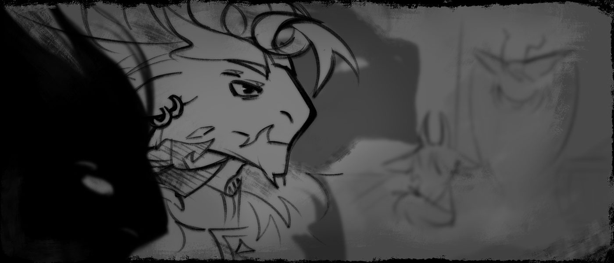
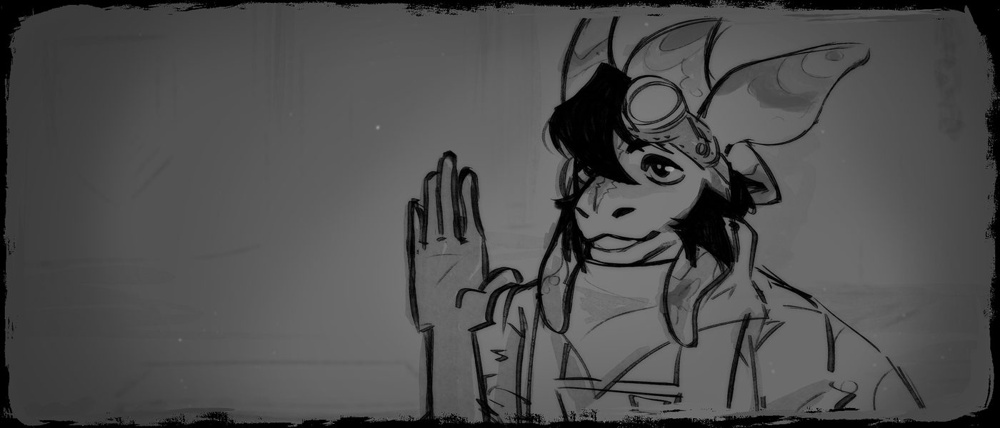
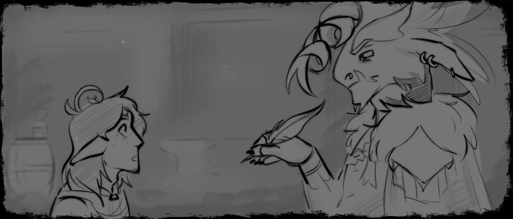
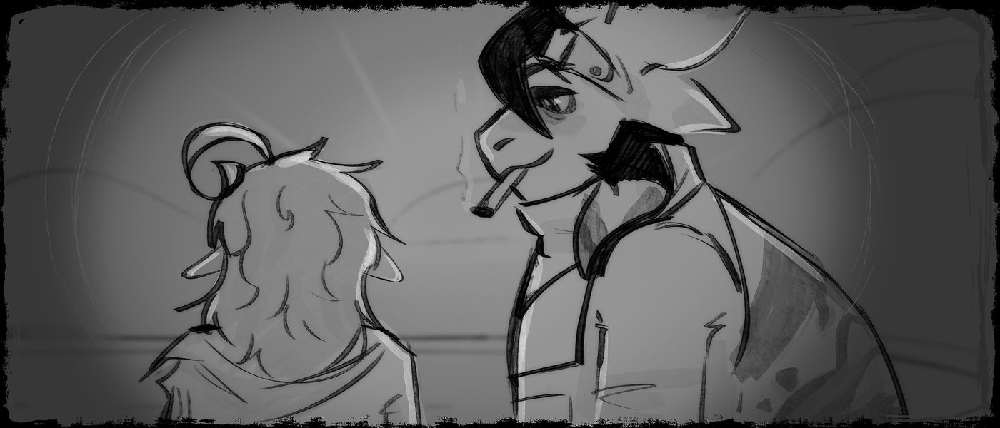

Не хвались завтрашним днём, потому что не знаешь,
Притчи 27:1
что родит тот день.
— Всё это началось… Как минимум сорок лет назад. Хотя, знаешь, в контексте всего произошедшего лучше вообще брать точкой отсчёта событий сотворение Вселенной, но там я точно запутаюсь и перевру факты. Ну, не суть… — Рассказчик теребил пальцами стопку каких-то замызганных жёлтых бумажек. — Но я лучше начну с одного важного путешествия, которое в итоге переменило ход истории. Наверное, так будет лучше.
— Ты собираешься просто забросить меня куда-то в середину повествования? О, ну наконец-то хоть кто-то не начинает с гигантского предисловия к истории на два слова.
Он развернул один из листов.
— Если что-то будет непонятно — спрашивай. А так… Мелкими шажками к общей картине. Слишком большое количество отступлений будет скорее лишним.
Шесть тысяч двенадцатый кул, второй день Неккáя.
Годы и месяцы там назывались, и называются, по-другому. Очевидно.
Бесконечный шум рынка никак не давал сконцентрироваться на этой проклятой рабочей бумажке. Все цифры сливались воедино, а слова плавились под палящим солнцем тёплого сезона Кирáма. Причём сразу было видно, где местные, а где приезжие: пока первые спокойно стояли за прилавками или около них, пели и танцевали на площади поодаль, вторые литрами скупали воду и прочие прохладительные напитки, а потом в срочном порядке удалялись в тень, созданную крупными навесами около берега озера. Раскалённый воздух, наполненный ароматами сотен разнообразных специй и трав, опалял и без того мокрую от пота морду, заставляя всё чаще и чаще моргать, отчего желание покинуть это Богами забытое место усиливалось с каждым неуверенным шагом.
— О-ча, понаехали голубчики. Чегой-та повылезали-то, ещё Неккáй идёт, не жарковато для них? — послышалось откуда-то сбоку, где какая-то низенькая торговка причитала своему то ли другу, то ли мужу. — Жуть та ещё, редко в Тойочибе эньера встретить можно.
— Дамочка, за собой следите, — рявкнул названный «эньер».
Сквозь узкие улочки, пропитанные пряными запахами самых разных блюд и напитков, шли три высоченных существа, полностью облачённых в изысканного вида военную форму — плотная ткань тёмно-синих кителей была украшена строгими квадратными узорами, переплетавшихся с кучей стягивавших тела ремней, к которым к тому же крепились блестящие полулаты из голубоватого металла. На драконоподобных мордах — уверенные, хоть и истощённые жарой выражения; увенчанные сверкающими в свете солнца элеронами головы подняты к небу, демонстративно над всем остальным народом; длинные хвосты, похожие больше на плавники, мягко качались на едва заметном ветру, касаясь стен каменных домов своими светящимися вибриссами. Их шаги, сопровождавшиеся лязганьем длинных когтей по кладке, были слышны, кажется, по всему городу, и местные купцы выбегали из домов, чтобы посмотреть на нежданных гостей.

— Неужели это действительно обязательно? Ну, посылать двух лейтенантов и одного оберста только ради забора заказа и проверки… Чего-то там, — тихо проговорил один из эньеров, шумно вздыхая под ухом их ведущего. — Как будто бы у нас работы совсем нет. То война на войне, то мы вынуждены по Тойочибе шататься.
— Полностью с тобой согласна, Рэшáн. Честное слово, я бы эти Восточные земли и за дэро бы не продала, — шедшая рядом с ним спутница то и дело смахивала платком пот с белёсого лба. — Я больше не буду соглашаться ни на какие гражданские задания, не для этого столько кулов в армии работаю.
— Я вас обоих сейчас бы обменял на какой-нибудь коктейль, — наконец отозвался, видимо, оберст, который и вёл делегацию к их пункту назначения. — Хотя я тоже не понял, к чему мы вообще здесь. Столько планов, а они трёх главнокомандующих отправили на эту огромную… Свалку. Не буду удивлён, если это попытка избавиться от нас и протолкнуть в верхушку Клятвовки чьего-нибудь сыночка.
Этот городок, Тойочиба, действительно привлекал к себе внимание самых разных существ округи и далёких районов. Будучи торговым узлом Восточных земель, которые считались нейтральными территориями, он брал под своё крыло многих изгнанников, путешественников, торговцев и прочих зевак, не нашедших своё призвание в чём-то ином. Здесь рождались и умирали звёзды музыки, гении живописи и виртуозы письма, но в то же время и простые, незаметные доходяги, так и не понявшие, в чём был смысл их существования. Хорошая поговорка есть: «Учёные с мировым именем, спившиеся писатели, сбежавшие из тюрьмы и маленькие дети дружно жмут руки за барной стойкой в Тойочибе».
Только, судя по всему, конкретно эньеров здесь не особо жаловали. Толстолобые и упрямые, они не были приспособлены ни к местному праздному менталитету, ни к постоянной жаре, что стояла здесь сезонами напролёт. Так и получается в мире — где-то определённые массы просто не приживаются, ничего не поделаешь. Эньеры, кажется, привыкли к такому — их элероны на голове совершенно не дёргались ни на какие оскорбления и выкрики со стороны других жителей города.
Здесь было крайне колоритно. Дома разных размеров, цветастые флаги кучи слившихся воедино наций, традиционная музыка со всех уголков света в каждой кафешке и много, очень много народу. Тут и там горшки с полумёртвыми растениями — их отчаянно пытались выращивать разные активисты и флористы, но, к сожалению, здешний знойный климат просто не позволял достигнуть нужного эффекта. Хотя под ногами, где-то меж песчано-каменными тропками, то и дело пробивалась короткая трава и крохотные цветочки, которым было абсолютно наплевать на дуновение южных пустынных ветров. «Неудивительно, что в нас тыкают пальцами. Мы здесь похожи на ледяные глыбы посреди степей, не меньше, — сам себе кивнул оберст под немой вздох. — Кому вообще показалось хорошей идеей строить центральные рынки прямо в предпустынье? Тьфу, бред какой. У кого-то беды с пониманием желаний потребителей».
Вскоре делегация подошла к большому зданию какой-то мастерской. Из длинной трубы валил чёрный дым, с заднего двора слышался стук чего-то о металлические пласты, туда-сюда носились всякие разные работники. «Там, поди-ка, ещё жарче, чем на улице, — с горечью подумал оберст, после чего тут же скривил морду и нахмурил тёмные брови. — А ведь нам потом ещё эту брехню тащить обратно». К сожалению, им ничего больше не оставалось, кроме как проследовать внутрь, зажмурив глаза от палящего жара печей и скрежета устрашающих машин.

— Добро пожаловать в мастерскую «Саншан»! Чем могу быть обязан? — сразу же на входе к ним прицепился какой-то местный работяга. Правда, разглядев в них высокопоставленных эньерских военных, тут же отстранился и опустил громкость голоса. — Кохáл Кан’Сар, какая встреча!
— Здоров будешь, мусьё Рубенштáйн. Я думал, ты ещё не вернулся из Самено, — оберст довольно формально протянул руку низкорослому кузнецу, и они обменялись приветствиями.
— К счастью, вернулся. На родине хорошо, конечно, но ричинское общество меня сильно утомляет. Тойочиба — та ещё дыра, но, привыкнув к местному ритму, уже никогда не сможешь с ним расстаться, — вздохнул он. — Ладно, я так понимаю, вы за заказом приехали? Как раз вовремя, позавчера только всё остыло.
Мистер Рубенштайн, грузный мускулистый ричин, повёл эньеров по длинным коридорам мастерской. Кажется, Кохал знал его давно, а вот остальные видели впервые — плюс, коренные саменцы встречались здесь довольно редко. Крупная голова, похожая на акулью с какими-то тонкими-тонкими, но очень жёсткими пластинками на ней, походившими больше на волосы, у кузнеца была ассиметрично окрашена чёрно-белыми пятнами, а на лбу, изувеченном вытянутым шрамом, поблёскивали огромные рабочие очки с толстыми стёклами. Судя по довольно хорошей одежде, он был владельцем «Саншан», ведь все остальные здесь обрисовывались скорее одним словосочетанием — «мальчики на побегушках». Рэшан так засмотрелся на мастера, что аж не заметил, как тот слегка замедлился и шлёпнул эньера по животу увесистым хвостом с твёрдыми плавниками. Его зеленоватые элероны едва ли дёрнулись от соприкосновения, но лейтенант ничего не сказал.
В итоге они вышли на раскидистую веранду на заднем дворе, где рабочие, видимо, оставляли все готовые заказы в больших деревянных коробках. Тут стоял неприятный гул от постоянных ударов и работы каких-то установок.
— Кеннет! Кенне-э-эт! — крикнул ричин, глазами ища, видимо, какого-то из работников. — Так, он же здесь был.
— Так да, я здесь.
Все вчетвером испуганно обернулись, услышав этот высокий скрипучий голос сзади. Странная, конечно, картина: вот он, прекрасный город расового разнообразия от мала до велика, и тут вдруг в одной из престижных мастерских вырисовывается тонюсенький и бесконечно забавно низкий людской парниша с длинными растрёпанными волосами какого-то грязно-красного оттенка. В просто невероятного вида прикиде, кстати — это была категория высшей моды, когда местные жители прямо поверх своей рабочей одежды одновременно натягивали какие-нибудь модные латы и украшения.
Правда, как только этот самый Кеннет, как и Рубенштайн пару минут назад, признал в эньерах послов Клятвенной армии, так моментально сжался, напрягся и отдал честь.
— Оберст Кохал Кан’Сар, лейтенант Аллурен Сильверсон, лейтенант Рэшан Роше, добрый день! — фамилии он произносил с забавным акцентом, но зато правильно, как от зубов отлетали. — Сейчас принесу документы на заполнение, можете пока посмотреть готовое оружие.
Кеннет неуклюже, путаясь в собственных ногах, ускакал в другую сторону, и два лейтенанта проводили его задумчивыми взглядами всех их глаз, по четыре на каждого. Обычно эньеры, конечно, закрывают одну из своих пар за ненадобностью, но здесь им почему-то жутко захотелось рассмотреть маленького человека.
— А… А почему он здесь? — спросила Аллурен, обращаясь к Кохалу. Рэшан молча поддержал её вопрос кивком и скрестил на груди четыре когтистых руки. — Помилуй Пантеон Божий, я была готова встретить здесь кого угодно, но не этого… Самого…
— Кеннета, да. Её Императорское Величество Высшая Жрица эньерская отправила его сюда на заработки, посчитав, что человеку нужно социализироваться в обществе сонаров, — слегка недовольно пояснил оберст, вырисовывая в воздухе форму короны. — Хоть в чём-то я с ней согласен.
— Аккуратнее со словами, Кохал. Ещё не хватало, чтобы тебя уволили, — Рэшан хлопнул его по плечу. — Хотя было бы неплохо, если бы он остался здесь навсегда.
— Ты тоже аккуратнее со словами, гений риторики, — тут по плечу прилетело и Рэшану, но уже от Аллурен. — Напоминаю вам всем, Жрица саморучно притащила его к нам и объявила, э-э, де-гент1Де-гент — так обозначается титулованная сущность, обладающая привилегиями исключительно на территории своего государства и не способная вести полит. деятельность за границей. На работу де-гента также накладывается большое количество ограничений. Принцем, поэтому снижаем градус и улыбаемся как можем.
Рубенштайн, всё это время подслушивавший их разговор, смог только посмеяться над абсурдностью ситуации. Он уже очень давно работает здесь, хорошо знает нравы самых разных Божьих созданий, вот и человека познал, когда в его мастерскую привели этого юношу на работу устраивать. Впрочем, он не жаловался — работники всегда нужны были, особенно смышлёные. Да и ричину не привыкать общаться со всякими фриками.
— Да ладно вам. Он, конечно, заноза в заднице, но работу свою выполняет почти идеально. Сколько там ему кулов? Короче, плевать на политику, я бы его себе на постоянную основу забрал. К зрелости будет виртуозом, — заявил Рубенштайн. — Жрица уволит его явно быстрее меня.
Кохал хохотнул и хотел было что-то ответить, но тут вернулся тот самый Кеннет, державший стопку каких-то бумаг. С морды оберста тут же пропала улыбка, ведь теперь ему предстояло всё это подписать, а два его спутника решили скоропостижно удалиться, чтобы и им не досталось лишней волокиты. Нужно же было всё-таки осмотреть товар, хотя никто из них не сомневался в отсутствии брака — они давно здесь заказывают.
— Ты ещё больше принести не мог? — эньер сморщил морду. — Рэнди, скажи честно, у вас все деньги уходят на бумагу, что ли?
— Так это не наши бумаги, друже. Все документы оформлялись при заказе от лица Герцога эньерского… Как там его? Аллен? Аллен Солл’Раш? Ну, не суть. В общем, мы не виноваты, — ричин отошёл в сторону, чтобы понаблюдать за работой своих кузнецов. Его небольшие плавники на спине, похожие скорее на крылья, довольно вибрировали. — Так, я пойду гляну, что там по другим заказам. Кеннет, помоги Кохалу, если что-то нужно будет. Потом отгрузим всё.
Рубенштайн пошёл в обход по своим владениям, забавно переставляя короткие ноги вразвалку, и оберст остался в одиночестве с его подмастерьем. Тот выглядел слегка напряжённо — на его вытянутом веснушчатом лице интересного смуглого тона мелькали нотки то ли страха, то ли недовольства. В местных краях люди встречались редко, будучи далеко не самой распространённой расой по миру, поэтому, наверное, Кеннет тоже приносил определённую долю интереса «Саншану» — многие тойочибцы и туристы хотели бы получить изделие, изготовленное человеком. Ну, мол, как это — чтобы такие хрупкие маленькие руки ковали меч для гигантского воина… Забавный феномен. Скорее всего, это тоже было причиной для Рубенштайна сохранять этого парня при себе.
Кохал принялся подписывать бумаги на получение заказа, пока Кеннет решил ещё раз осмотреть сам товар. Там была тонна тяжёлых мечей, копий и разных видов брони, изготовленных, судя по всему, из какого-то дорогущего сплава, если смотреть на стоимость всего этого добра. На дворе вдруг стало достаточно тихо: два лейтенанта куда-то пропали, ричин тоже, а кузнецы стояли поодаль на небольшом перерыве.
— Пс-ст, парень, ну-ка иди сюда, — Кан’Сар вдруг тихо подозвал к себе юношу, и тот покорно приблизился к оберсту. — Слушай, давно тебя искал; мне даже пришлось взять это идиотское поручение ради того, чтобы лишний раз сгонять в Тойочибу.
— Я… Почему оберст Клятвенной армии меня ищет?.. Я что-то не так сделал? — Кеннет тут же запаниковал и отпрянул. Он смотрел в сторону, словно не решаясь направить взгляд ровно на эньера.
— Ну, не совсем. Ты мне ещё должен будешь, что я твою задницу от дерьма всякого уберёг, понял? Хотя не должен был. Меня твоё наличие в моей стране вообще не очень устраивает, но я явно не желаю тебе публичной казни и всё такое, — он пожал плечами и задумчиво прижал элероны. — Ты на кой сор Жрице про планы свои пишешь?

— В смысле? Вы о чём? — он удивлённо приподнял длинные, обычно опущенные ушки. — Я всегда отчитываюсь перед ней о разных событиях, это моя обязанность.
На этих словах Кеннет слегка повернулся боком и указал на висевшее на его поясе украшение — изящная стальная брошь с замысловатым символом в виде звезды, рассёкшей полумесяц. Синеватая лента, что окольцовывала бёдра парня, закреплялась именно здесь, и её кончики, расшитые острыми квадратными узорами, больше напоминали то ли закрылки, то ли эньерский хвост, нелепо приделанный к человеку. Но, даже если выглядело это немного забавно на фоне остальной одежды подмастерья, Кохал закатил глаза на выдохе и слегка саркастично покивал, признав этот аксессуар — у него был похожий, да и у других лейтенантов тоже.
— Да кем бы ты там ни был… Кеннет, написать о том, что у тебя порвались штаны между ног — это одно, а поведать о грандиозных планах на путешествие в чужую страну — это совершенно другое, — Кохал отложил перо в сторону и хлопнул руками по столу. — Слушай, мистер Коротышка, не забывай, что я тоже был приставлен к тебе в качестве куратора когда-то там, а с памятью у меня всё нормально. Жрица ясно дала тебе понять, что твоя проблема с использованием порталов будет решена нашим кругом, а не чьим-то ещё, поэтому писать ей такое — самоубийство. Она же точно накрутит себя, что ты собрался давануть по шлёпкам и смыться прочь от этого балагана.
Парень заметно поник, ощутив себя каким-то нашкодившим котёнком, которого теперь носом тыкали в его бардак. Эньер же потёр пальцами переносицу, пытаясь сосредоточиться на работе.
— Думаете?.. А я как-то собрался с мыслями и всё-таки написал ей письмо. Я же там расписал все свои планы! Исключительно туризм и получение нового опыта, про эксперименты с Дорагон Отобаси там ни слова не было, — Кеннет сжал кулаки и помотал головой. — Мистер Рубенштайн сказал, что спонсирует мою поездку и даже оплатит курсы механики там.
— Ты с концами тупой или что? Живёшь тут вроде столько кулов, а ещё Жрицу не понял нашу. Она тебя на месте прикончит, если ты шаг влево, шаг вправо против её воли. Она ненавидит Антáлу и ненавидит всё, связанное с Дорагон Отобаси, — он нахмурился и шумно выдохнул. — Поэтому ты либо сидишь здесь и не высовываешься, либо валишь из этой дыры, но втихую. Понял?
Пытаясь уловить суть последних фраз, Кеннет задумчиво принялся едва заметно дёргать ушами, словно пытался поймать объяснение ими. Вопрос мелькал всего один, — «Почему?», — однако далее к нему пристраивалось большое количество прочих продолжений предложений. Юноша не понимал, почему Кохал, как оберст армии и приближённый всего правительства, вдруг решил поймать за шкирку несостоявшегося беглеца, который, по идее, должен «сидеть здесь не высовываться», и предоставить ему возможность отправиться на все четыре стороны. Вряд ли это была его личная неприязнь — Кеннет знал этого эньера уже давно; конечно, Кан’Сар мог быть бесконечно заносчивым и эгоистичным, но он бы никогда не начал играться с политикой, особенно если это означало рискнуть своими позициями. Тем более так внезапно… И так скрытно. Это всё явно выходит за рамки контроля Королевской семьи, но зачем Кохал это делает? «Ничего не понимаю. Столько кулов на изучение культуры эньеров, чтобы они всё равно делали всё по-своему. Ладно, это в духе местных… Но это не в моём духе».
— Но если госпожа Жрица не хочет меня отпускать, то почему её приближённый старается меня прикрыть? — спустя пару мгновений молчания, Кеннет всё-таки решил пойти прямой дорогой, проигнорировав при этом любой грубый тон эньера. Культура, всё-таки.
Кохал прищурил свои тёмные проницательные глаза и глубоко вздохнул, как будто бы сам не знал, зачем это делает. Он вновь мельком осмотрел своего бывшего подопечного, такого маленького и худощавого, с глупым лицом и потерянным взглядом, словно не понимавшего совсем ничего вокруг… «А ты совсем не изменился, не так ли? — оберст постукивал длинными тёмными когтями по бумагам. — Тогда тебе точно нужно убираться отсюда как можно скорее».
— От тебя скрывается пара вещей, малой. Просто я подумал, что так будет лучше. Да и плюс, может, тебе так понравится Антала, что ты наконец-то свалишь из Звёздного Предлуния куда подальше, — хохотнул эньер, хотя в его голосе звучала нотка лжи. — Ты, наверное, давно понял, что наша Империя — не место для кожаных вроде тебя.
Юноша неловко присел на стул и принялся теребить какие-то то ли ленты, то ли нитки, затягивавшие растянутый капюшон. Он довольно часто его надевал — правда, выглядел слегка глуповато, да и длинные волосы вечно щекотали щёки и шею. На удивление, с этим элементом одежды Кохал был знаком, видимо, натренированный вечным общением со знатью Империи, которая потакала традициям — подобного рода накидки и головные украшения всегда вручались гражданам или гостям Звёздного Предлуния не-эньерского происхождения, чтобы сымитировать роскошные сверкающие элероны. Давно, правда, оберст их не видел… В последнее время иноземцев там не жалуют.
— Это просто очень странно выглядит с моей стороны. Сперва я тут жил интервалами, затем меня вообще с концами в Тойочибу выселили… Теперь Вы внезапно появляетесь и говорите мне всё вот это вот как-то подпольно, — смущённо проговорил Кеннет, покачивая головой. — Может, я чего-то не понимаю?
Кохал самозабвенно пожал плечами и вернулся к заполнению документов на получение оружия. На его морде, слегка сокрытой витым элероном, похожим на кудряшку, не читалось абсолютно ничего — он выглядел максимально спокойно и невозмутимо, словно камень.
Кеннета эньер знал уже довольно давно. Он отчётливо помнил тот странный день много-много кулов назад, когда этот парниша впервые появился в обществе совершенно иной от него расы; правда, тогда Кохал и сам был довольно молодым. Потом вся его семья ещё ближайший тол2Тол — аналог месяца; длится 28 дней., если не больше, перетирали эту тему, ведь, ну, как это вообще происходит в мире — Её Императорское Величество привела представителя низшего вида в их грандиозную столицу, выстроенную эньерами для эньеров, так ещё в будущем и провозгласила его своим то ли приёмным сыном, то ли подопечным, никто так и не понял. В газетах об этом много не писали, поэтому обоснований, нормальных, поступка так и не нашлось. Распространялась информация о культурной интеграции, о безграничной любви и нежности Жрицы к гражданам своим и прочим расам, о прогрессивности… Но всё это сливалось в единый бессвязный текст.
Но пока где-то происходили достаточно странные политические игры, в Тойочибе ничего не менялось. Кохал был здесь с делегацией около четырёх кулов назад, но за это время абсолютно ничего не изменилось — те же магазины, те же лица, те же нравы. В тот период Звёздное Предлуние только-только закончило обустраивать новые торговые пути с Восточными землями и разрешило своим гражданам официально жить в Тойочибе, что, по идее, хоть немного должно было изменить порядки, но… В итоге, судя по говору местных, эньеров здесь совсем не осталось, только их маленький посол. Наверное, это можно считать за хоть какое-то изменение, правда Кохал не до конца понимал, куда делись его соратники — словно надеялся здесь кого-то встретить.
— Держи, Нэт. Надеюсь, Рэнди не заставляет тебя шухаться с этими бумагами в одиночку. Ты, парень, для волокиты не создан, — Кохал подмигнул ему и отдал все документы. Тот уныло вздохнул. — Кстати, пока мы на теме путешествий. Если ты реально собираешься сваливать из Тойочибы, то можешь мне кое-что пообещать? Чисто по-мужски.
«Без меня меня женили, но всё равно терять нечего», — Кеннет одобрительно кивнул. Эньер порылся в сумке и достал оттуда маленькую затёртую фотографию, после чего отдал её парню и хлопнул его по плечу.
— Если встретишь его, напиши мне, лады? Хоть что-то полезное вытяну из этого проклятого задания с мечами.
Кеннет задумчиво рассмотрел снимок. Он был очень старым, цвета практически смылись, да и качество печати оставляло желать лучшего — здесь камер-то особо и не было. Но, несмотря на трудности, он разобрал там худощавого эньера, тоже фиолетового, но слегка светлее, чем Кохал, ещё и похожего на какого-то местного анархиста.
— Это…
— Да. Ну, не суть. Бывай, малой, — он поднялся из-за стола и направился в сторону коробок с товаром. Время у оберста всё равно не бесконечное.
Немного постояв в раздумьях, юноша вдруг сорвался и в последний раз догнал Кохала, дёрнув того за рукав.
— Стойте! Я… Вы полностью прочитали моё письмо, да? Обо всех моих планах? — уточнил Кеннет, и Кохал кивнул. — И… Вы поддерживаете меня, серьёзно? Если я отправлюсь в Анталу, у меня не будет никаких проблем?
— Ну, не знаю по поводу «не будет», но они как минимум задержатся, если ты не будешь разбалтывать свои идеи на каждом шагу, где есть эньеры. Вали куда хочешь, Нэт. У людей судьба лежит туманом, так что не упусти свой шанс.
С самой южной точки Восточных земель, что находилась в черте Тойочибы, всегда открывался роскошный вид на плато Дхармы, сокрытое величавыми песчаными горами, поясом Оза, больше похожими то ли на рога, то ли на острые изломы земной коры. Здесь, за ними, ветра приносили влагу с залива Кихаттай и холод северных ледников в тысячах километров, но сразу после начиналась тропа жара, что вела прямиком к Пламенной пустыне. Местная география всегда привлекала самых разных путешественников, которые гнались не только за красотами, но и за безопасностью — в этих краях практически не было разбойников и прочих психов, ведь их либо сражал суровый климат, либо стражи с рынков, распространившиеся по всей территории, лишь бы торговые пути не закрывались.
Каждый раз, когда в Тойочибу приходили официальные делегации от правителей разных государств, тут сильно повышалась оборона — по всему периметру расставляли стражников, боясь то ли нападения на дипломатов, то ли нападения самих дипломатов на местных. Особенно это касалось Звёздного Предлуния, ведь мало кто здесь жаловал эньеров. Грубые, крупные и невероятно загадочные, они только и делали, что прославляли свою Империю и все её завоевания. Старейшие жители Тойочибы помнили, что много кулов назад предлунцы старались и эти нейтральные земли под себя подмять, но это у них не вышло.
Кохал, Рэшан и Аллурен покинули кузницу ближе к вечеру, когда мистер Рубенштайн помог им собрать весь товар и погрузить его на повозки. Им предстоял путь до городка Тсаку́ю, что лежал немного севернее, оттого ехать нужно было в гору — Рэнди посочувствовал бедным кроссакам, невероятно красивым ездовым животным Звёздного Предлуния, которым придётся прожигать свой поразительный внешний вид среди острых песчаных скал, ещё и тащить за собой весь этот металл. Впрочем, три эньера были очень рады покинуть Тойочибу и наконец-то направиться к портальному узлу, который привёл бы их обратно домой. Вряд ли они ещё когда-нибудь вернутся, поэтому Рубенштайн обменялся рукопожатиями с Кан’Саром и пожелал им хорошей дороги.
На закате ричин нашёл своего помощника на высокой смотровой площадке к югу Тойочибы, откуда можно было рассмотреть тот самый пояс. Кеннет сидел там один, при этом рассматривая какую-то большую брошюру, попутно отмечая что-то в своём дневничке. Рэнди никогда не интересовался, зачем парень его вёл и что он там отмечал, но… Видимо, это было что-то важное для него, ведь прибыл юноша сюда из Звёздного Предлуния уже с ним. Наверное, какие-то заметки об этом мире и его жителях, или же что-то личное.
— Ойо, Нэт. Что ты здесь делаешь? Скоро похолодает, иди домой, — грузный ричин еле-еле поднялся на площадку. Он присел на лавочку рядом с Кеннетом и мельком изучил бумаги. — О, так Жрица тебе всё-таки разрешила поехать в Анталу?
Парень резко напрягся и свернул брошюру. Степной горячий ветер чуть не выбил её из рук.
— Ойо… Там некоторые заминки, но, если коротко, то я так и так отправляюсь туда. Наверное… — он смущённо отвёл взгляд куда-то в сторону. Забавно, что в свете багряного заката его голубые глаза превращались в тёмно-янтарные, прямо как у Рубенштайна. — Мне нужно подумать.
— Тебе Кохал что-то передал?
— Что-то в этом роде. Как Вы догадались? — Кеннет повернулся на ричина, но тот просто улыбнулся и пожал плечами. — Там, в общем… Ладно, нет, я, наверное, не могу распространяться. Короче, можете, пожалуйста, никому больше не рассказывать, что я улетаю в Анталу? А я пообещаю Вам вернуться ровно через два тола, хе-хе.
— А к чему такая секретность? Что-то случилось?
— Честно говоря, я сам ничего не знаю и не понимаю. Просто… Кажется, так будет лучше, — выдохнув, он снова развернул свои бумажки. — Я собираюсь полететь самостоятельно через Пламенную пустыню и Средиземные леса, чтобы обогнуть Ледник. Как думаете, есть смысл остановиться в Ракхаме на денёк? — на вопрос Кеннета ричин кивнул. — Отлично. В таком случае оттуда уже и доберусь до Северных Небесных гор. Интересно, на какой высоте расположена Шерна… Тут не написано.
Пока парень что-то там бубнил, Рэнди успел достать сигару и закурить, окрасив воздух вокруг них в глубокий серый с какими-то оранжевыми переливами. Кеннет уже привык к такому, ведь сам иногда курил, поэтому даже не обратил внимания.
— Ах, Шерна… Чудесное место, парниша. Я там был в девяносто восьмом, уже после всех беспорядков. Несмотря на то, что антальцы порою бывают слишком пафосными и «понтовыми», они достаточно снисходительно относятся к гостям. В Шерне мне даже любезно провели экскурсию по Храму Шафран, представляешь? Они такие больше не водят, вроде, — мечтательно рассказал Рубенштайн, рукой указывая вперёд, к Пламенной пустыне. — А, высота? Да не знаю. Ну, сколько там километров пик Аллитау? Хотя там есть и части пониже немного. Например, у Громового водопада неплохо жить, там и гостиниц побольше.
Кеннет всё тут же записал себе в дневник, сделал даже пометку — «узнать высоту пика Аллитау перед залётом в Шерну». Правда, после этого он вычеркнул строку «посетить Храм Шафран», причём достаточно разочарованно. Теперь придётся думать, чем заменить освободившийся день. «Может, стоит всё-таки посмотреть подвесные мосты у водопада? Как-то скучно… Да и что мне там ловить?»
— Кстати, Нэт. Что по поводу порталов? Ты всё-таки будешь искать там экспертов или побоишься рисковать?
В дневнике была ещё одна строка, — «Изучить Дорагон Отобаси», — однако написанная мелко-мелко, причём ещё и карандашом, а не пером, чтобы можно было её быстро стереть в случае чего.
— Я не знаю… Я бы очень хотел, правда, но что-то мне подсказывает, что это может плохо закончиться. Никто из местных сонаров Дорагон Отобаси не смог мне помочь, вряд ли там найдутся варианты лучше, ну, бесплатно. Эх… Сложно быть человеком.
Рэнди приобнял своего ученика за плечо и притянул к себе поближе. Кеннет, хоть и сильно расстроенный, тут же улыбнулся.
— Да кем угодно быть сложно! Особенно сейчас, Нэтушка, особенно сейчас… Видал, как Звёздное Предлуние за какими-то там заказами аж оберста и двух лейтенантов посылает? Нехорошее что-то грядёт, поэтому я даже рад, что ты улетаешь в Анталу на время, — он потрепал Кеннета по голове. — Оставайся там, если здесь начнётся что-нибудь нечистое, хорошо? Не хочу, чтобы ты собой рисковал.
Парень поднял глаза на закат. «Что-то грядёт»… Ну, было такое ощущение, хотя и очень смутное. Кохал его только усугубил.
Окончательно в Тойочибу Кеннет переехал чуть больше кула назад. Здесь было очень спокойно, но по-своему — несмотря на постоянные балаганы на базаре и разборки по деньгам, Восточные земли представлялись нейтральной территорией, которую обходили абсолютно все возможные конфликты. Здесь попросту не за что было воевать, ведь каждый мимопроходимец мог просто прийти и взять, то, что ему нужно. Да, были попытки завоевать и эти места, но… Воля народа всегда была и будет оставаться самой сильной властью в мире.
Обычно Кеннет даже не задумывается о своей жизни. Да, он человек, живущий в чужом для себя обществе… Но оно так сильно его крутит-вертит, что времени на осмысление ситуации просто не остаётся. Поэтому парень вечно забывает о своей позиции в качестве кого-то там важного в Империи эньеров, которая, казалось бы, вообще должна была его убить при первой встрече с её Жрицей. Это сильно спорная тема, которой Кеннет до конца не понимал. Всё происходит слишком быстро, причём ещё и не зависит никак от него, вот и приходится нестись вслед за водой по этому бурному потоку, надеясь однажды вдохнуть полной грудью.
Но да, изменения в мире заметили все, не только Кохал. Оборачиваясь назад, Кеннет всё-таки отметил нотки стресса и недовольства в голосе оберста, когда тот говорил о чём-то, что скрывается ото всех — будто бы он этого боялся. «Мне стоит… Перечитать письма от Жрицы, — вдруг подумал юноша, смотря на все бумажки, вложенные в дневник. — Может, я что-то упускаю? Иначе я не понимаю, к чему такое отношение с другими государствами. Всё же было неплохо… Я даже работаю с ричином! Антала с Самено в хороших отношениях, насколько помню. В чём проблема?»
— О чём задумался?
Парень хотел ответить что-то вроде «О своём месте в мире и о том, почему я единственный человек здесь», потому что вопрос всё-таки насущный и до сих пор открытый, но решил не привирать за счёт случайно мелькнувшей где-то в подсознании мысли.
— О Ваших словах, если честно. Просто не понимаю, что происходит. Кохал тоже сказал мне быть аккуратнее и всё такое… — Кеннет снова теребил свои ленточки. — Сегодняшние гости сбили меня с толку. Я ощущаю холод от собственного дома и не понимаю, рады ли мне там вообще. Может, они послали меня в Тойочибу не просто так…
— Слушай, не ищи скрытых смыслов там, где их нет, Нэт. Я думаю, тебе просто реально нужно было социализироваться с другими сонарами! Мы тут все-все разные такие, от мала до велика. Ну и плюс зарабатывать полезно. Я же тебе неплохо плачу, — он ткнул его локтем в бок. — Я никогда не был в Звёздном Предлунии, но что-то мне подсказывает, что там скучно. Ну, типа… Эньеры славятся своими боевыми мероприятиями, балами и разными выставками, но разве это заменит путешествия по всему миру?! А ещё работу в лучшей кузнице с лучшими материалами, которые тебе так нравятся. Наверное, Жрица просто заботится о тебе как о представителе другой расы, неизвестной для нас. Кто знает, в чём истинно талантливы люди. В чём истинно талантлив ты, Нэт. Позволь себе найти ответ на этот вопрос.
Слова Рэнди звучали успокаивающе для Кеннета, но что-то внутри не давало ему верить им в полной мере. Конечно, все эньеры, воспитавшие человека, скорее всего хоть немного о нём заботились, но… Эта высылка прочь случилась так внезапно, как будто Жрица просто поскорее хотела избавиться от лишних ушей рядом. Зачем и почему — следующие на очереди вопросы, ещё сложнее, чем те, что задал Рубенштайн.
Кеннет призадумался. Он помнил, что с началом обсуждений какой-то катастрофически важной реформы его стали гораздо реже пускать на эти самые собрания, хотя в остальные разы всё было свободно и спокойно. Нет, конечно, парень понимал, что Жрица не обязана допускать его к абсолютно всем государственным делам, но у них был уговор — она показывает своему де-гент Принцу абсолютное большинство процессов, чтобы он в будущем стал лучше ориентироваться в них. «Но зачем мне это, всё равно… Я бы не хотел становиться политиком, — Кеннет почесал подбородок. — Надеюсь, помимо меня есть и другие наследники трона. Если и быть Принцем, то дистанционно решать какие-то мелкие вопросы по поставкам металла. В этом я эксперт». Нет, конечно, Жрица объясняла ему периодически причины своего поступка, подкрепляя всё безопасностью, будущими инновационными нововведениями и так далее, но какой-то общей картины не складывалось. Наверное, Кеннет просто всё ещё сильно молод и неопытен для такого. Да и вообще, в Звёздном Предлунии далеко не все члены Королевской семьи в итоге вступали во власть; возможно, у него было другое предназначение.
Он ощутил себя каким-то… Глуповатым. Ничего не понимал. Читал, слушал, анализировал столько кулов — а мир до сих пор оставался для него таким чужим и холодным, словно Кеннет оказался здесь буквально вчера. Жизнь ощущалась книгой без предисловия. «Видимо, его придётся писать самостоятельно, — юноша обратился к словам Кохала. — У людей странная судьба… Интересно, почему? Людей здесь мало. Неужели их всех поглотила эта самая “судьба”?»
— Ну, если мне нужно социализироваться с другими сонарами, тогда я точно отправляюсь в Анталу. Это же будет неплохая практика, не так ли? — на этот вопрос ричин довольно кивнул. — А ещё я очень хочу изучить местное производство инструментов из виолума. Как думаете, в тот курс входит программа обучения инфузии? Или обработки кхалиэба? Или всё вместе? Кхалиэб же самый удобный металл для инфузии.
Рубенштайн довольно улыбнулся, заметив изменения в голосе Кеннета. Он всегда был таким изменчивым пареньком — то впадал в печаль и злобу, то буквально за пару секунд вновь возвращался в строй, находя новые способы решения всех проблем. Наверное, это было одним из тех золотых качеств, которые Рэнди так ценил в своём ученике. Казалось бы, знакомы всего пару кулов, а уже как родной сын. Даже Кохал это знал.
Кеннет снова начал записывать что-то в дневник, поэтому ричин отстранился от него, всё ещё потягивая сигару. Немного посидев и поразглядывав переливы багрянца на бескрайнем небе предпустынья, он залез в карман расписного фартука и достал оттуда какую-то бумажку с печатью, причём так, чтобы парень этого не заметил. «Ну, если Кохал сказал, что так будет лучше, значит, так действительно будет лучше. Два чужеземных ветра должны слиться в один поток, — Рэнди выдохнул густой дым, закрывая им алое солнце. — От тебя скрывается пара вещей, малой».

Достопочтенному Р. Рубенштайну.
Привет, Рэнди.
Буквально через пару дней тебе должны будут отправить документы на выполнение одного заказа, там будет просто гора-горища различного оружия всех форм и калибров, не пугайся. И, скорее всего, в бумагах будет написано что-то вроде “для тренировочного корта” и так далее, но, зная тебя, скажу, что ты в это ни на секунду не поверишь. Сам всё понимаешь.
Звёздное Предлуние опять мутит воду. Ну, та ситуация с Анталой, помнишь? Точнее, там корни не в Анталу немного уходят, но ты понял. Не знаю, чего конкретно от нас (от Клятвовки) хотят, но, думаю, не лучших действий в отношении кеáтлов и их аутпоста в Шерне. Ещё момент: перед Шерной будет затронута Тойочиба, поэтому настоятельно рекомендую тебе уехать там… Куда-нибудь. На время. С Эсмáя по Расу́н, наверное, точно не могу сказать пока что; я напишу в случае каких-либо изменений. Я уверен, что ты 1. не потерпишь никаких убытков за четыре тола и 2. так будет лучше для твоей безопасности. Мы не можем потерять настолько стратегически важного союзника.
По поводу Кеннета. Я так понял, он собирается в Анталу в Неккае? Блин. Он, короче, написал письмо Жрице, где описал свои планы, там, о туристических походах и т.д., однако все прекрасно понимают его истинные намерения (ты тоже), поэтому я решил не передавать это всё ей, оставил себе. Мне просто нереально повезло быть в тот день на разборе почты. Я вот думаю: а что делать? Если мы оставим его в Тойочибе, то, скорее всего, разыграется предыдущий план Жрицы, который так-то начал исполняться ещё с его пересылкой туда. Это будет не очень выгодно. А если отправим по-тихому в Шерну, то его могут найти уже там и… Ну, Бог знает, что сделают за такое. Однако есть и плюсы.
Вот моё видение развития событий: мы сейчас его тихонечко отправляем в Шерну, ты там крутишь-вертишь, знакомишь с правильными братьями, а он уже к Фаерóну спокойно покинет её и отправится обратно в Тойочибу, где к тому моменту должны будут закончиться все действия. Таким образом мы ему глазки прикроем и там, и там — как два пальца разломать. Напиши мне, что ты думаешь об этом. Я просто иначе не понимаю, куда мы ещё можем его запрятать по всему чёртовому, проклятому, ненавистному мной Дерóйсити.
С уважением,
К. Кан’Сар.